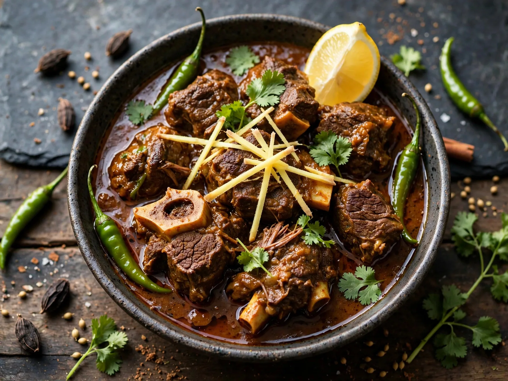
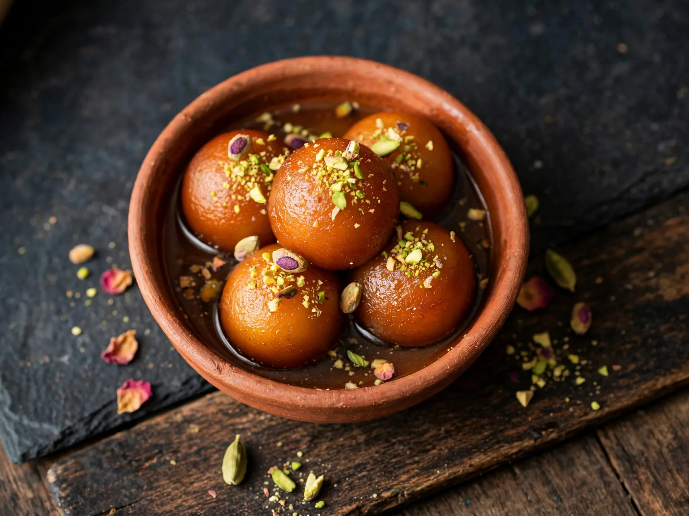

01
Chicken Biryani
A family meal built on spiced chicken, fragrant rice and a slow dum. The method shows when to layer the rice and how long to rest the pot before serving.
Cook famous dishes from Pakistan and India, plus favourite dishes from 14 more countries: 16 countries and 32 recipes in total. Each dish has a big photo, a step by step method, cooking time and servings, in 13 languages. Click any photo to open the full recipe and start cooking.
13 languages: English, Roman Urdu, हिन्दी, Español, Français, العربية, Português, Русский, 中文, 日本語, Deutsch, Türkçe, বাংলা. Use the language menu at the top to read every recipe, with its ingredients and step by step method, in the language that is easiest for you.
Choose a dish for lunch or dinner, from a homemade curry with rice and naan to a slow gravy for a family meal. Every card shows cooking time and servings. Open a photo to see the ingredients and the step by step method.
Try a different spelling or filter, like “kebab” or “halwa”.
Browse by country
World food recipes from 14 countries, with 20 dishes to try at home. Each dish has a big photo, ingredients, cooking time and servings, and a step by step method in 13 languages. Click a country below to show only its dishes in the recipe list.
Pakistani recipes and Indian recipes stay in the main recipe list above. Use the Country filter there to show dishes from Pakistan or India, or choose a country below for world food.
Start here
If you are new here, start with these three. Each one has a clear photo, simple ingredients and a step by step method, from a weekday curry to a sweet for a special dinner.
A family meal built on spiced chicken, fragrant rice and a slow dum. The method shows when to layer the rice and how long to rest the pot before serving.

A slow cooked gravy with tender beef, served with naan. The method shows how to build the masala, thicken the gravy and add fresh garnish at the table.

Soft, syrup soaked sweets for Eid, weddings and family dinners. The method shows how to knead the dough gently and keep the syrup warm, not boiling.
Frequently asked questions
Short answers to questions about using this page, finding a recipe and reading it in your language.
Click any photo. The full recipe opens with ingredients, a step by step method, cooking time and servings.
Press the heart on a photo to show it as saved on this page. The save only lasts while this page is open, so copy the recipe if you want to keep it.
Yes. Use the language menu at the top. Full recipe detail is translated in all 13 languages: English, Roman Urdu, Hindi, Spanish, French, Arabic, Portuguese, Russian, Chinese, Japanese, German, Turkish and Bengali, with ingredients and the step by step method in each language.
No. Beef Nihari has a video in English, Roman Urdu and Hindi, and you can switch the language inside the recipe. Other recipes have the full written method, with ingredients, cooking time and servings.